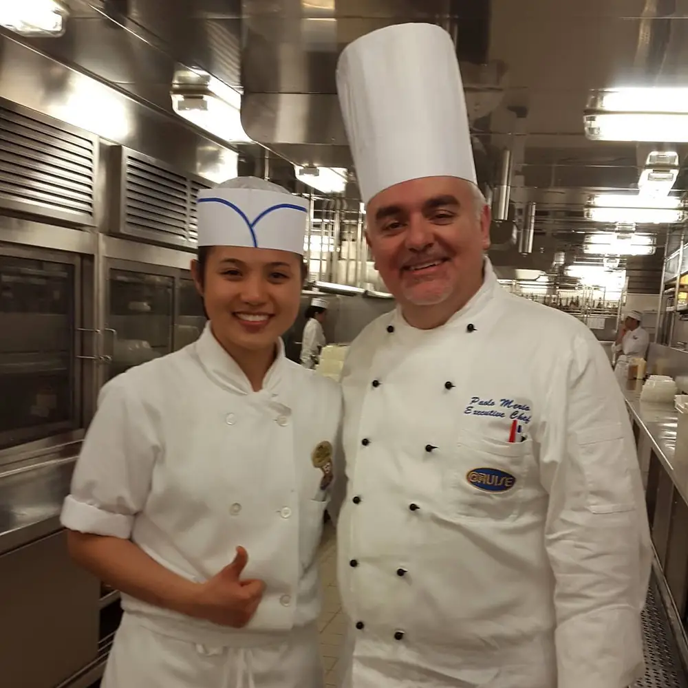
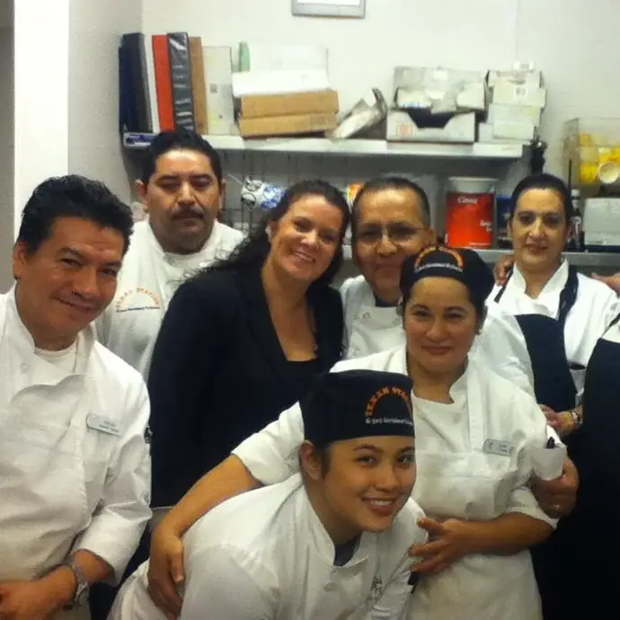
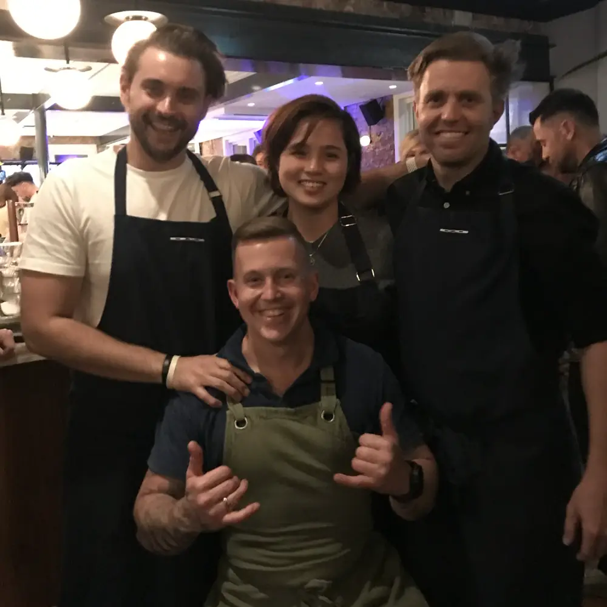
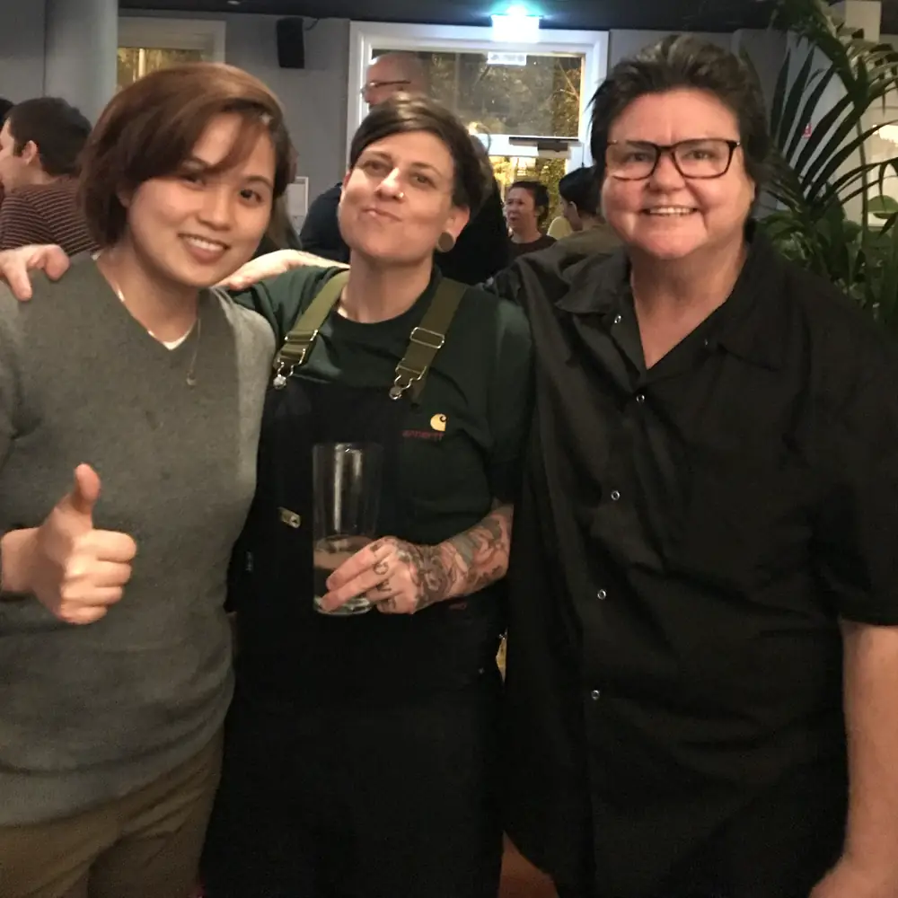
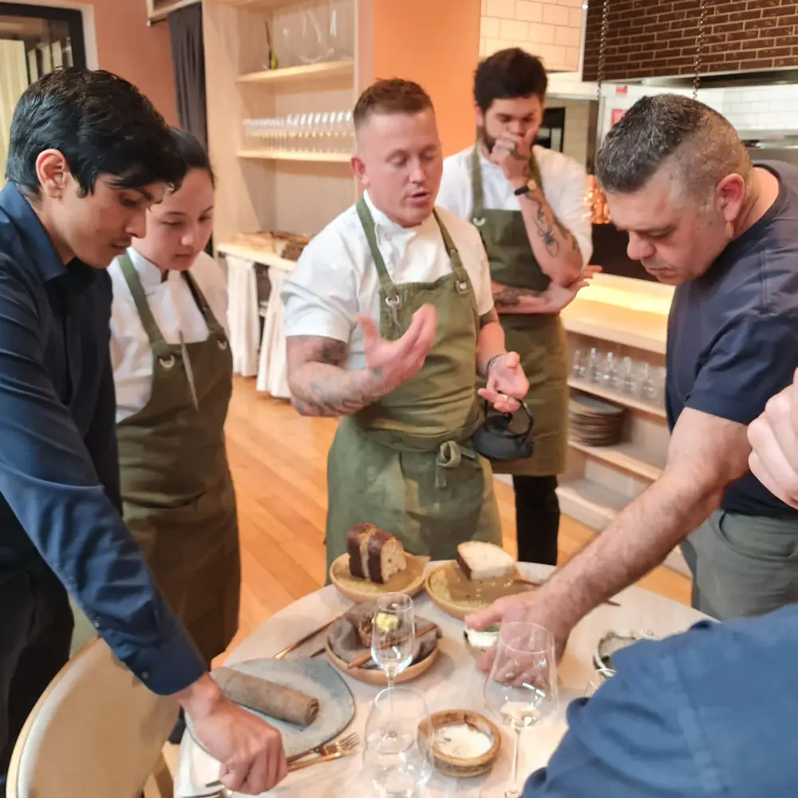
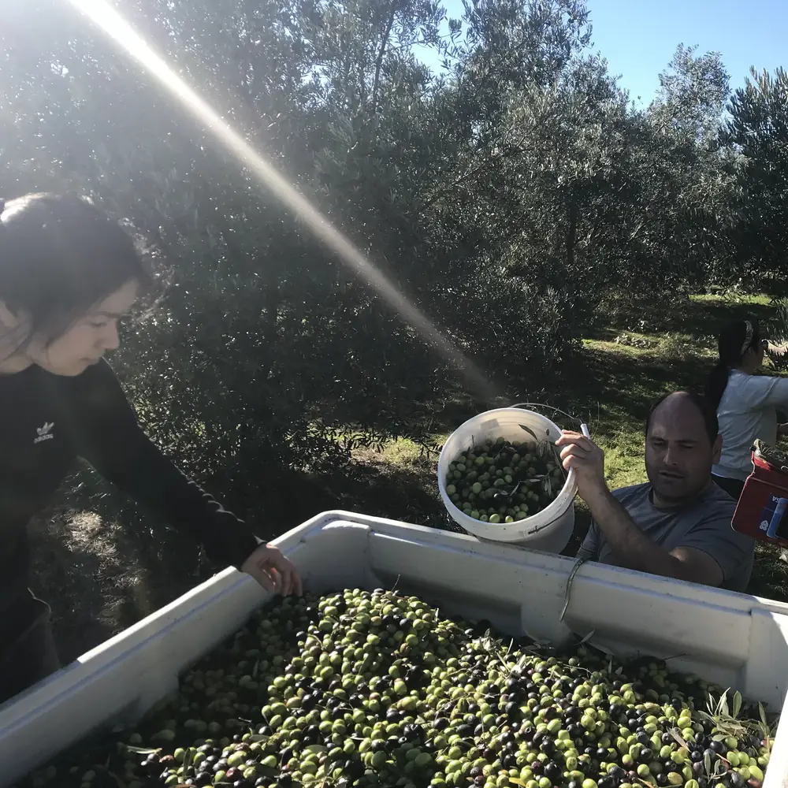
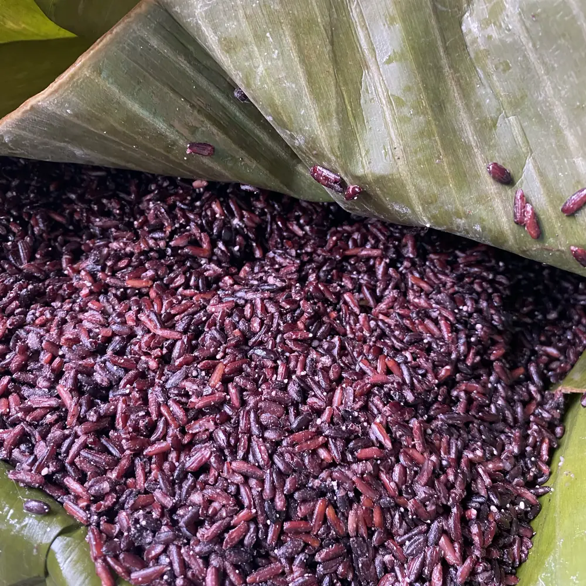
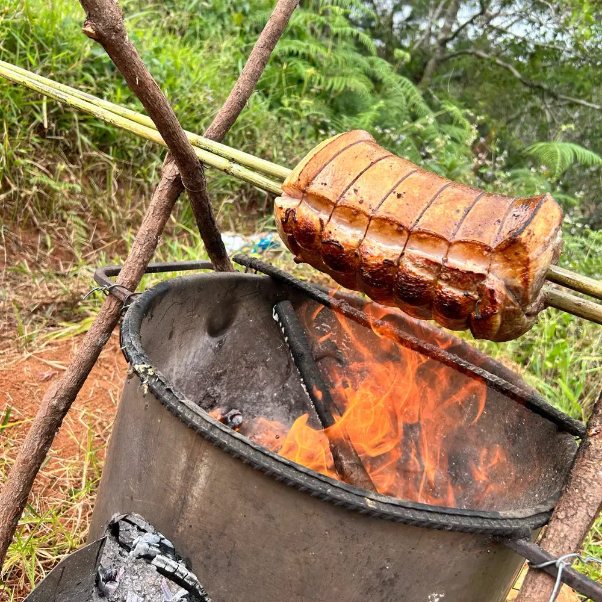

Over the years, I’ve come to realise that the way I cook today has very little to do with following one particular cuisine or trying to fit into a certain category. It’s been shaped by the places I’ve lived, the kitchens I’ve worked in, the people I’ve met, the food I’ve grown up with and the things I’ve experienced along the way.
My journey in food has taken me through different countries, from working on cruise ships to kitchens in the United States and eventually finding my way to Australia. I’ve worked across many different styles of cooking, from fine dining and busy restaurants to large events and wood-fired kitchens. I’ve had the opportunity to work with food from different parts of the world, and I think that has had a big influence on how I see cooking today.




Not one cuisine
I’ve never really wanted to be known as a chef who belongs to just one cuisine.
The more I worked with different food traditions, the more I realised that every cuisine has something to teach you. It might be a particular way of treating an ingredient, a technique, a way of preserving food, the balance of flavours, or simply an understanding of how food is meant to be shared. I don’t see those things as belonging to one part of the world. They can influence each other and, when done thoughtfully, find a place alongside other ideas.
That’s probably why I find it difficult to put my cooking into one box.
One of the most formative experiences for me was working at Lume in Melbourne. We spent a lot of time understanding where our ingredients came from, working with foraged produce and learning to appreciate things that might otherwise be overlooked. It changed the way I looked at food. I became more curious about the landscape, the seasons and the stories behind the ingredients we use.


The hard parts
But finding my own direction hasn’t always been straightforward.
Working in professional kitchens can be demanding. There are long hours, constant pressure and moments when you question whether this is something you can sustain. There were times when I was so caught up in the pace of service and the demands of the industry that I barely had the time to stop and think about the kind of food I actually wanted to create.
Starting Cubo came with its own challenges. Building something independently, finding opportunities, managing the business side while still being a chef and trying to make everything work with limited resources is not always easy. Sometimes you have an idea in your head, but turning it into something real takes much more than cooking. There are logistical challenges, financial considerations and plenty of trial and error.
Still, those experiences have taught me to be resourceful, to work with what I have and to appreciate the process just as much as the outcome.
What connects us
My connection to food is also influenced by the different cultures and traditions I’ve encountered throughout my life. Growing up with Filipino food gave me an early connection to food as something deeply tied to family, memory and place. Working with other culinary traditions later in my career opened that perspective even further.
I’ve become particularly interested in the things that exist across cultures: fermentation, preservation, cooking over fire, slow processes, using the whole ingredient and making the most of what is available. The ingredients and methods may change from one place to another, but the thinking behind them can often be surprisingly similar.


Living and cooking in Australia has added another layer to that perspective. There’s so much to discover in the environment around us, from native ingredients and wild botanicals to the incredible work of local producers. I enjoy finding ways for these different influences to sit alongside one another, without forcing them together or trying to label them as one particular cuisine.
Sometimes the best ideas come from simply allowing an ingredient, a technique or a memory to lead the way.
I don’t think inspiration always comes from grand moments or extraordinary experiences. Sometimes it’s a conversation with a producer, a meal shared while travelling, a walk through the bush, a failed experiment or even a dish that doesn’t turn out the way you imagined.
I’m still learning, still experimenting and still figuring things out. I don’t have everything mapped out, and I think that’s part of what keeps cooking interesting for me.
With Cubo, I want to continue exploring these connections between food, place, culture and people. Not necessarily to create something entirely new, and not to be confined to one cuisine, but to take the things that I find meaningful from different culinary traditions and allow them to naturally become part of the way I cook.
Because ultimately, I don’t think good food needs to belong to just one place.
It’s the stories, techniques, ingredients, people and experiences behind it that make it meaningful.